Tutorial and user guide AI schematic, PCB, enclosure and manufacturing — from one prompt to a board you can order or mill
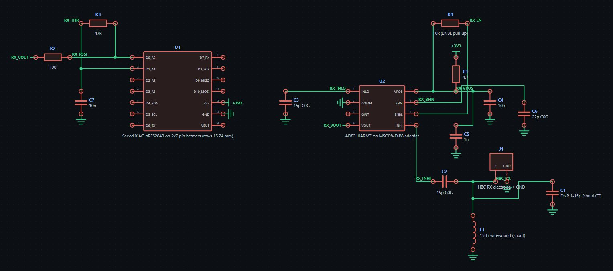
Web: pcbgo.site · Windows app and source: github.com/Abdelhayali/CircuitPilot Version 2026.10.30 · Covers the web app, the Windows app, Claude Desktop and Claude Code
Contents
What CircuitPilot does
Getting started: web, Windows app or source
Connect an AI model
A tour of the window
Projects: saving, folders, Google Drive, versions
Your first board with the AI copilot
The schematic editor
Parts: JLCPCB database, Library panel, part editor
The PCB: placement, routing, rules, DRC
Hand editing on the PCB
3D view of the board
Ordering: Gerbers, JLCPCB, exports
Milling at home on a CNC (3018 Pro)
Enclosures and wearables (3D print)
Documentation: the product datasheet PDF
Claude Desktop and Claude Code (MCP)
REST API and other tools
Settings reference
Keyboard shortcuts
Troubleshooting and FAQ
Quick reference: from idea to board
1. What CircuitPilot does
CircuitPilot is an electronics design tool with an AI copilot. Describe a circuit in plain language and it picks real parts from the JLCPCB / LCSC catalogue, draws the schematic, checks it, places and routes the PCB, builds a 3D-printable enclosure, writes the datasheet, and gives you the files to order the board from JLCPCB or mill it yourself. You can do every step by hand too: the AI and you use the same tools.
AI copilot Claude, Gemini, OpenAI, OpenRouter, Ollama Cloud, or a local model (llama.cpp, LM Studio, Ollama). Modes: Agent (edits the design), Ask (review and questions), Plan (a plan you approve).
Real parts One search covers the JLCPCB catalogue with stock and price, the EasyEDA library, the community library, the KiCad / SparkFun / Digi-Key open libraries and your own parts.
Schematic Wiring, multi-page sheets, drawing frame and title block, ERC, and ✨ Organize for a readable layout.
PCB Automatic placement, a rip-up-and-reroute autorouter, design-rule presets for JLCPCB and home manufacturing, DRC, copper pours, hand routing, 3D view with real part models.
Manufacturing Gerbers and drill files, JLCPCB BOM and pick-and-place, one-click JLCPCB quote, PCB drawing PDF, EasyEDA export, CNC G-code for desktop mills.
Enclosure A printable case fitted to the board, 35 templates for wearables and boxes, a hand-modelling tool, print checks, STL / STEP / OpenSCAD.
Datasheet A product datasheet PDF with the schematic, PCB renders, mechanical drawing, pinouts and BOM.
Automation Claude Desktop and Claude Code connect over MCP (over 90 tools); a REST / OpenAPI interface for scripts.
Which version should I use?
Web app (pcbgo.site)
Windows app (CircuitPilot.exe)
From source (python server.py)
Install
Nothing: open the link
Unzip and double-click
Python 3 (Node.js for MCP)
Projects stored
In your browser (or your Google Drive)
On your PC (and Google Drive if signed in)
On your PC
Cloud AI models
Yes
Yes
Yes
Local models
Yes, with CORS enabled in the model server
Yes, no setup
Yes, no setup
Knowledge folders
No
Yes
Yes
Claude Desktop / Claude Code
No
Yes: one-click Connect
Yes
Works offline
No
Yes (except cloud AI and live part search)
Yes
The web app is the same program: placement, routing, 3D and the G-code all run on your own computer, in the browser.
2. Getting started
Option A: the web app (nothing to install)
Open https://pcbgo.site in Chrome or Edge (Firefox and Safari work too; folder saving needs Chrome or Edge).
The 🔑 Connect AI window opens. Get a free key (chapter 3) or close it to design by hand.
Type what you want in the chat box at the bottom right and press Send, or add parts from the left panel.
Where are my projects?On the web, projects are saved in your browser. Use ☁ Sign in (Google Drive) or Export → Project file to keep a copy, and to open them on another PC.
Option B: the Windows app
Download CircuitPilot-Windows.zip from github.com/Abdelhayali/CircuitPilot/releases/latest (also linked from pcbgo.site).
Unzip it anywhere (for example C:\CircuitPilot) and double-click CircuitPilot.exe. Windows 10 / 11, 64-bit.
If Windows SmartScreen warns ("Windows protected your PC"), click More info → Run anyway. The app is not code-signed.
The app opens in its own window. Projects and downloads are kept in %LOCALAPPDATA%\CircuitPilot.
The Windows app includes everything: the server, the parts databases, the open libraries, Gerbers, 3D, enclosures and a bundled Node.js for Claude Desktop. No Python or Node.js install is needed.
Command-line options: --port 5173, --server-only (no window), --lan --password SECRET (also serve phones and other PCs on your network), --connect-claude (connect Claude Desktop, see chapter 16).
Option C: from the source code
git clone https://github.com/Abdelhayali/CircuitPilot
cd CircuitPilot
python server.py 5173 # then open http://localhost:5173
On Windows you can double-click start.bat: it starts the server, shows the address for other devices on your network and can open a public Cloudflare link. Always set a password before exposing the app: python server.py 5173 --password YOUR_PASSWORD.
3. Connect an AI model
The copilot needs a model. The 🔑 Connect AI window walks you through it; your key is stored only in your browser and sent straight to the provider you choose.
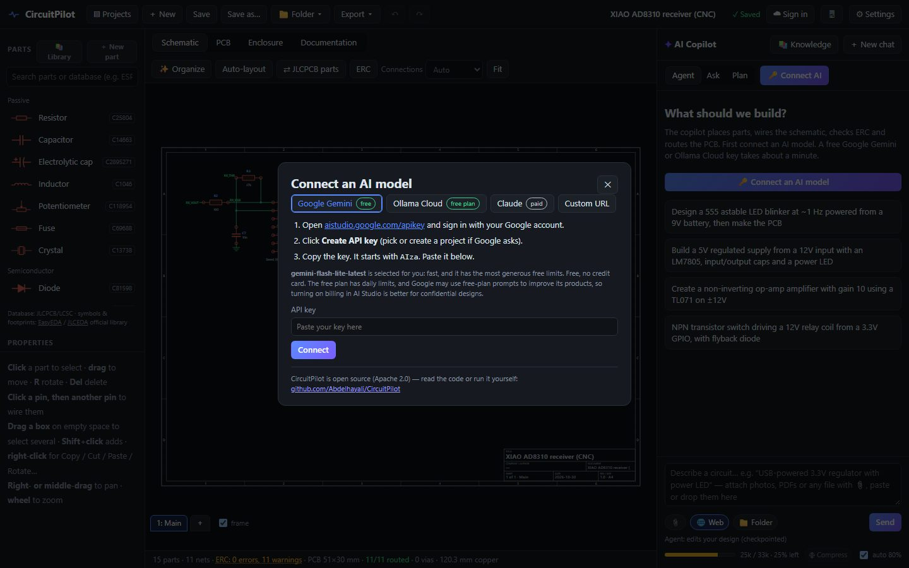
The Connect AI window: pick a provider, paste the key, Connect.
Provider
How to get access
Notes
Google Gemini
aistudio.google.com → Get API key (free)
Fast and free to start; Flash models handle tool calls well
Ollama Cloud
ollama.com → account → API keys (free tier)
Large open models (gpt-oss, Qwen …)
Anthropic Claude
console.anthropic.com → API keys
Strongest at long design tasks; reads PDF datasheets natively
OpenAI, OpenRouter, Groq, NVIDIA, Grok
The provider's API-key page
Any OpenAI-compatible endpoint works: Custom URL
Local model
llama.cpp, LM Studio, Ollama, vLLM on your PC
Settings → OpenAI-compatible → URL such as http://localhost:8080/v1. The model must support tool calling for Agent mode
Several providers at onceSave as many providers as you like; the model menu above the chat lists all of their models. The context window is detected from the server.
Local models on the web appThe model server must accept requests from the page (CORS): Ollama with OLLAMA_ORIGINS=https://pcbgo.site, LM Studio with Enable CORS. The Windows app and server.py need no setup: they forward the requests themselves.
4. A tour of the window
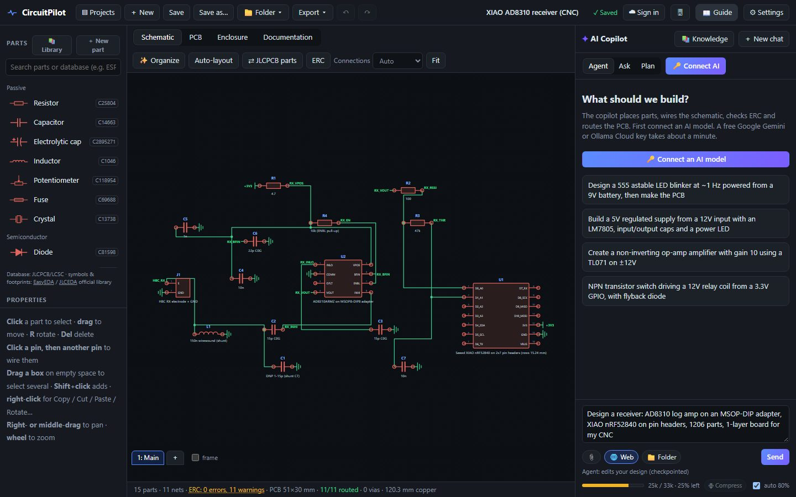
The CircuitPilot window with a schematic open and the AI copilot on the right.
Area
What it does
Top bar
▤ Projects, ＋ New, Save / Save as, 📁 folder saving, Export ▾, undo / redo, ☁ Sign in (Google Drive), theme, ⚙ Settings
Tabs
Schematic, PCB, Enclosure, Documentation. Each tab has its own toolbar
Left panel
Parts: built-in symbols, search of the parts databases, 📚 Library, ＋ New part
Centre
The editor. Wheel = zoom, right- or middle-drag = pan, F = fit
Right panel
Properties of the selection, and the AI copilot chat: model menu, mode (Agent / Ask / Plan), 📎 attach, 🌐 web, 📁 folder, 📚 knowledge, context meter
Autosave: every change is saved; the status next to the project name shows ✓ Saved.
＋ New starts a project; Save as… (Ctrl+Shift+S) continues in a copy under a new name.
📁 Save to folder… writes the project as <name>.circuit.json into a folder you choose and keeps it updated on every save: easy to back up, put in Git or Dropbox. Open from folder… opens such a file.
☁ Sign in keeps every project and My Library in your own Google Drive (a hidden app folder only CircuitPilot sees). Sign in on another PC, desktop or web, and your designs are there.
Import: CircuitPilot projects, EasyEDA Pro projects (.epro / .epro2, schematic + PCB) and EasyEDA Standard PCBs. Import folder… adds every project found in a folder and its subfolders.
Earlier versions (desktop): about every 10 minutes while you edit, and before big changes. ⟲ in the project list restores one; Deleted projects… brings back a deleted project.
6. Your first board with the AI copilot
Type a request in the chat and press Send. Be specific about size, power and parts if you care about them:
Design a USB-C powered ESP32-C3 board with a BME280 sensor and a status LED, 30 × 30 mm, 2 layers.
Create an AD8310 log-amp receiver on a 1-layer board I can mill on my CNC 3018, 1206 parts.
Review my schematic: are the decoupling capacitors and pull-ups right?
What the copilot does
Searches the parts databases (and the web, if 🌐 is on) and reads datasheets.
Adds the parts with their real pinouts and footprints, and wires the nets.
Runs ERC, organizes the schematic and looks at a screenshot of its work to fix crowded areas.
Generates the PCB: placement, routing, GND pour, DRC. It moves parts and re-routes until everything connects.
On request: an enclosure, the datasheet, Gerbers, an order quote, or CNC files.
Modes and chat tools
Control
Use
Agent
Edits the design with tools (the default)
Ask
Read-only: review, explanations, calculations
Plan
Writes a BOM + netlist plan; press Execute plan to build it
📎 Attach
Photos, PDF datasheets, Word or text files; paste or drag them in too
🌐 Web
Lets the AI search the internet and read web pages and PDFs
📁 Folder / 📚 Knowledge
A folder of design notes, rules and datasheets the AI follows (desktop)
🗜 Compress
Summarises a long chat to free context (automatic at 80 % full)
Checkpoints
Every Agent message snapshots the design; restore with one click
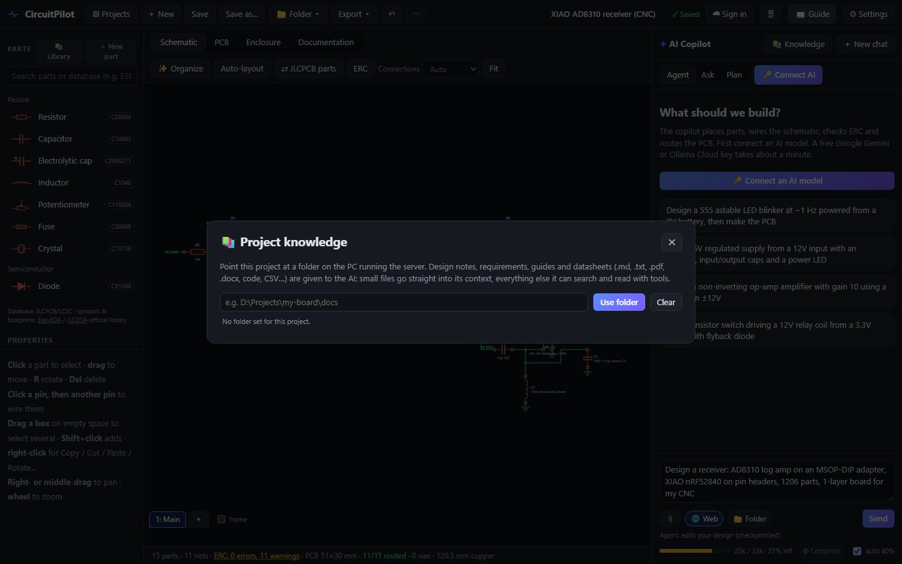
📚 Knowledge: point the project at a folder of documents; the AI reads and searches them.
7. The schematic editor
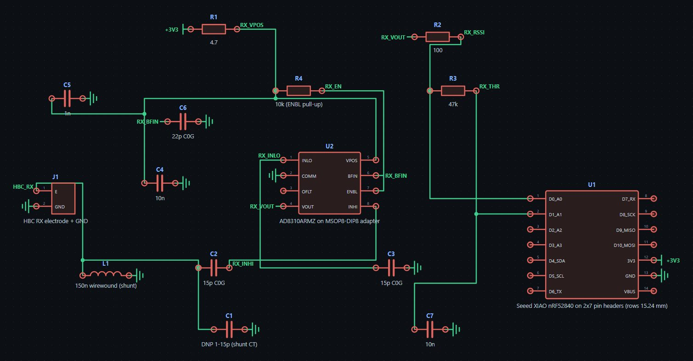
A schematic as it was drawn: parts spread out, long wires.
Drawing
Add a part: click it in the left panel, or drag it onto the sheet. Search the databases from the panel or with 📚 Library (Shift+F).
Wire: click a pin, then another pin. Power symbols (GND, +3V3, +5V …) connect by name.
Move / rotate / delete: drag; R rotates; Del deletes. Drag a box to select several; Shift+click adds or removes.
Copy / paste: Ctrl+C / X / V / D. A pasted block keeps its power nets and its own wiring.
Right-click a part for Cut, Copy, Duplicate, Rotate, Delete, Properties, Edit symbol & footprint.
Connections ▾: Auto (wires for nearby pins, net labels for far ones), Wires, or Net labels.
Sheets: ＋ in the sheet bar adds a page (double-click to rename); nets that continue on another sheet appear as labels. The frame checkbox shows the A-series drawing frame with a title block.
Cross-probing: select a part or net here and it is selected on the PCB, and the other way round.
✨ Organize: a readable schematic in one click
The same circuit after ✨ Organize: each part beside the pin it connects to, GND parts vertical with GND down, the 3.3 V part with its supply on top.
ICs and modules sit in a row; every resistor, capacitor, inductor, LED or transistor goes next to the IC pin it is wired to, and chains (R → C → GND) continue outward.
Parts on GND stand vertical with GND at the bottom; parts on a supply (3V3, VDD …) stand vertical with the supply on top; series parts lie horizontal along the pin.
Wires are routed around the symbols and power symbols, never on top of another wire; dots mark joins.
Ctrl+Z brings the old layout back. The AI uses the same command (organize_schematic).
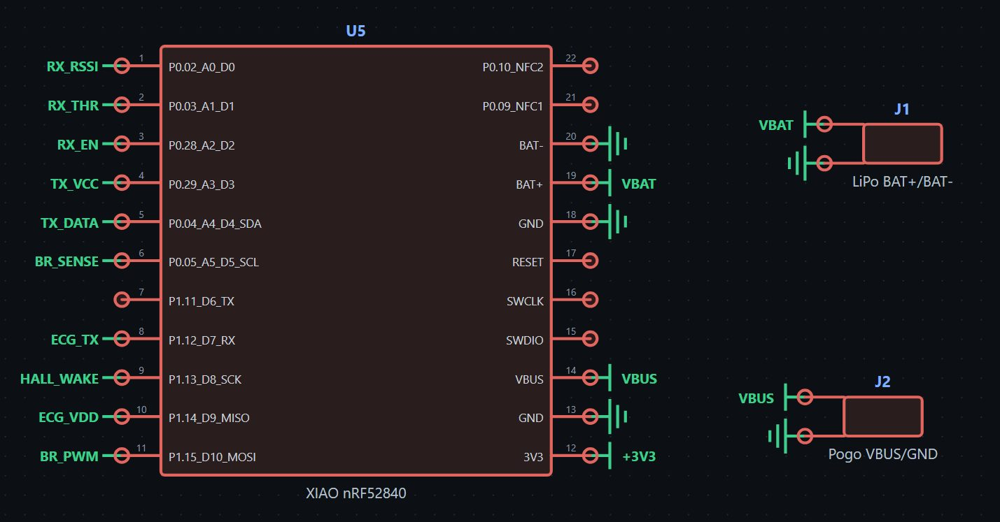
A larger design with power symbols and net labels.
8. Parts
Searching
One search asks the JLCPCB catalogue (stock, price, Basic / Extended), the EasyEDA library (about 1.6 million LCSC parts), the EasyEDA community library, the KiCad, SparkFun and Digi-Key open libraries (about 20 000 parts) and My Library. Only parts with a footprint are shown, so whatever you pick can go straight onto the PCB.
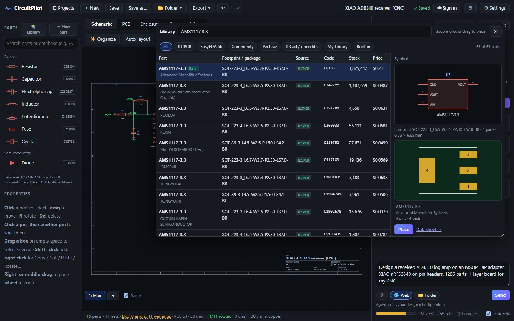
📚 Library (Shift+F): results from every source, with the symbol and footprint of the selected part.
Place with Place, a double-click or Enter, or drag a row onto the schematic.
Built-in palette parts (resistor, capacitor, LED, diode, transistor, MOSFET, regulator, crystal …) are backed by real JLCPCB parts. ⇄ JLCPCB parts converts older designs.
Parts archives (⚙ Settings): keep your own copy of the JLCPCB catalogue, so search works offline or when JLCPCB is down. The full archive holds about 450 000 in-stock parts.
Footprint for passives: switch between the JLCPCB part's footprint and 0402 / 0603 / 0805 / 1206 / THT in Properties.
Part editor: your own symbols and footprints
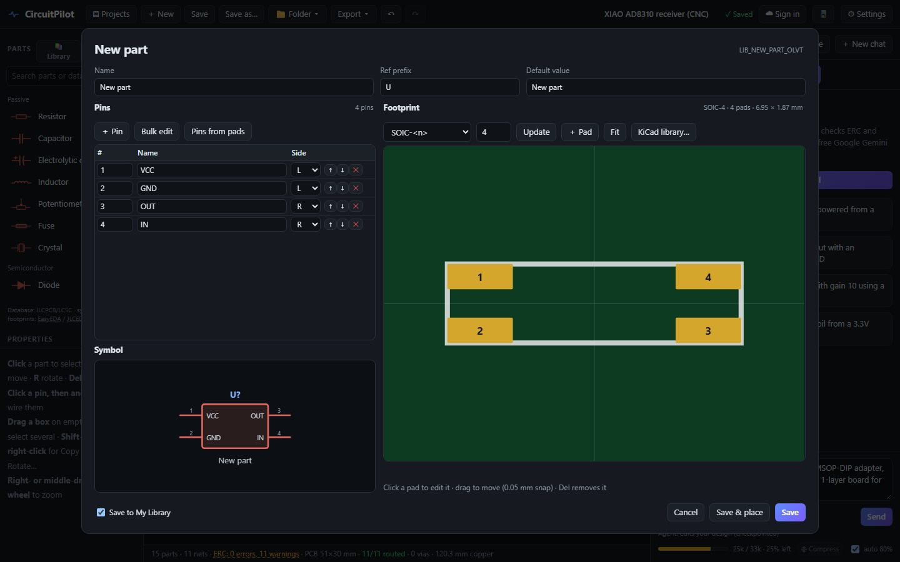
＋ New part: pins on the left, live symbol, footprint with generators and draggable pads.
Pins: number, name and side (L / R / T / B); Bulk edit pastes a pin list.
Footprint generators for 0805, SOT-23, SOT-223, SOIC, TSSOP, QFN (with exposed pad), DIP and pin headers; or KiCad library… (15 000+ footprints). Pins from pads adds the missing pins.
Select a placed part → ✎ Edit symbol & footprint to fix a database part. Saved parts go to My Library; every placed copy updates.
9. The PCB
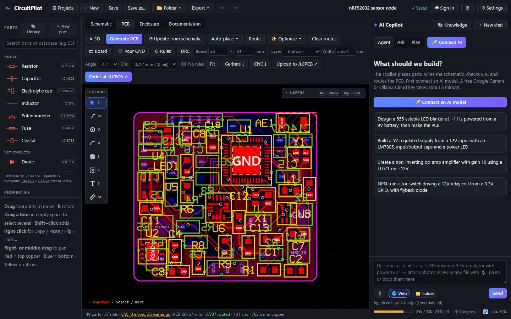
A routed 2-layer board: top copper red, bottom blue, GND pours, silkscreen labels.
From schematic to routed board
Generate PCB places the parts and routes the board. Connectors go to the nearest edge facing out; the biggest IC goes in the middle; decoupling capacitors sit next to their pins.
Auto-place ▾: Quick place (finds the smallest board when the size is empty) or ✦ AI place (the model draws a floor plan).
Route: rip-up and reroute until every net is connected, up to the effort time set in Rules. Stop keeps the best result so far.
✨ Optimize ▾ moves parts and re-routes until everything connects; …and make the board as small as possible shrinks it too.
⬛ Pour GND fills both layers with ground copper.
DRC checks the finished board; click a violation to zoom to it.
⟳ Update from schematic brings later schematic edits onto the board without redoing it.
Design rules
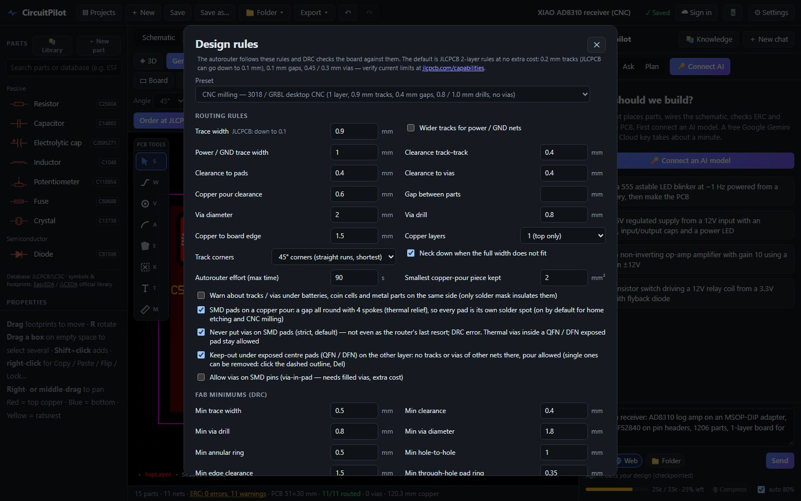
⚙ Rules: presets for JLCPCB and home manufacturing, every gap and width editable.
Preset
Use it for
JLCPCB small, no extra cost (default)
0.2 mm tracks, 0.45 / 0.3 mm vias: everything JLCPCB makes at the base price
JLCPCB standard / tightest / 5-5 mil / power
Roomier boards, very dense boards, or high current
Home etching (1 layer)
Toner transfer or UV etching: 0.4 mm tracks
CNC milling — 3018
Milling with a V-bit: 1 layer, 0.9 mm tracks, 0.4 mm gaps, 0.8 / 1.0 mm drills, no vias (chapter 13)
Separate gaps for track–track, pads, vias and copper pours; per-net widths (for example +5V 0.8 mm); neck-down near fine-pitch pins.
No via in pad (default on), keep-outs (K) for antennas and coin cells, a warning for tracks under batteries and metal parts.
SMD pads on a copper pour: optional thermal relief (a gap with 4 spokes), so each pad is its own solder spot.
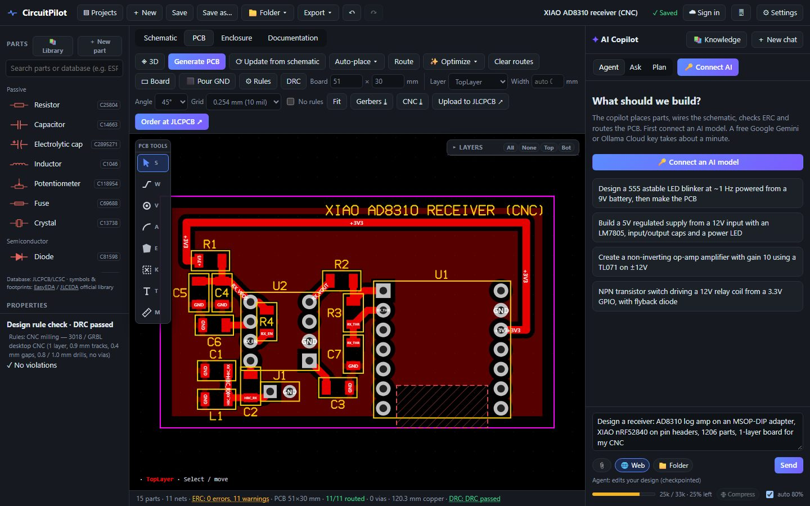
DRC: exact geometry, markers on the board, click a line to zoom to it.
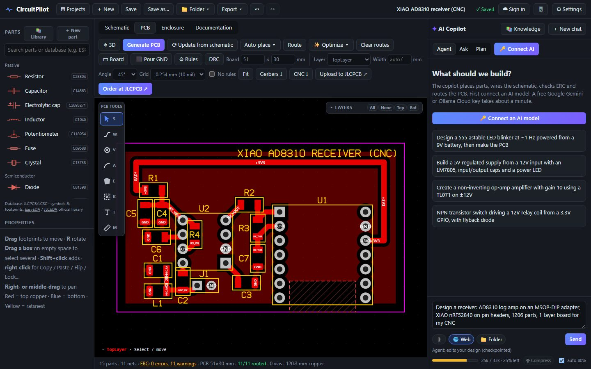
A single-layer board designed for CNC milling: wide tracks, GND pour, through-hole parts.
10. Hand editing on the PCB
Action
How
Select / move
S or Esc; drag parts and vias; R rotates; double-click a track selects all of it
Route a track
W, click a pad, click corners, click a pad of the same net. While routing: T / B change layer (adds a via), Space 45° / 90° / any angle, / flips the bend, + / - width, Backspace removes a corner
Via, measure
V; M (mm and mil)
Copper area, arc, keep-out, text
E, A, K, T
Bottom side
Select a part → ▼ Bottom in Properties
Connector on an edge
Select it → ⇤ Left / ⤒ Top / ⤓ Bottom / Right ⇥
Board outline
▭ Board: rectangle, rounded, circle / ellipse, or draw a custom outline
Net highlight
Click a track, via or pad: the whole net glows and Properties lists its parts
Track widths after routing
Click a track → width for this track, the net, or every track
Silkscreen labels
Placed automatically off the pads; drag, resize, R, + / -
The autorouter keeps every hand-drawn track and routes the rest around it. The Layers panel shows, hides and recolours layers and picks the active copper layer.
11. 3D view of the board
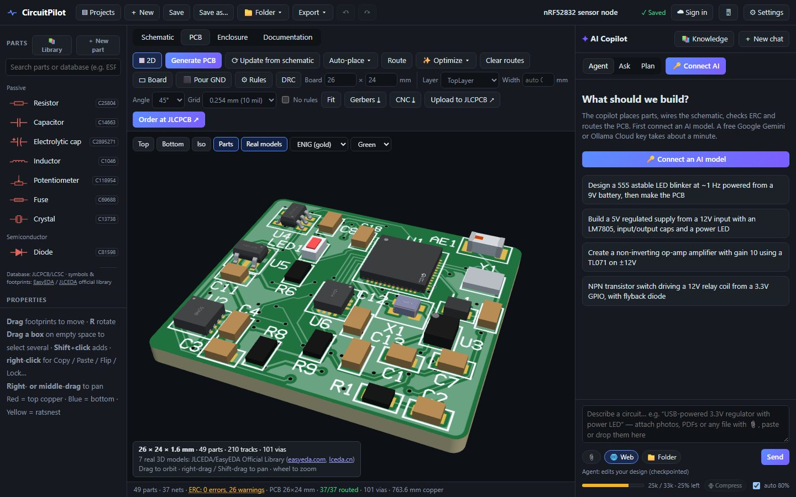
◈ 3D: solder mask, copper, ENIG or HASL pads, silkscreen and real 3D part models.
◈ 3D in the PCB toolbar switches between the 2D editor and the 3D board. Drag to orbit, right-drag to pan, wheel to zoom; Top / Bottom / Iso views, mask colour, pad finish, and Real models (3D models from the EasyEDA official library, downloaded once and cached).
12. Ordering: Gerbers, JLCPCB, exports
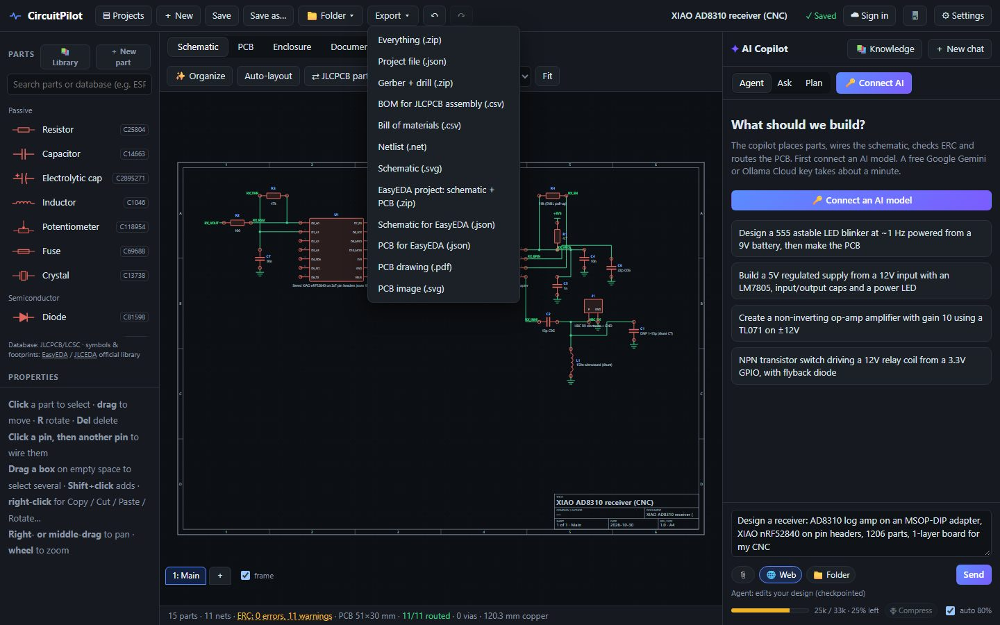
Export ▾: every file format in one menu.
Gerbers ⤓ runs DRC first. If anything is wrong a window lists it with Fix on board · Re-route · Optimize placement · Download anyway. The zip holds copper, mask, paste, silkscreen, outline and drill files.
Order at JLCPCB: DRC, LCSC part matching, then the board is uploaded and priced live (quantity, colour, finish, build time, shipping). Upload to JLCPCB opens JLCPCB's quote page with the board loaded.
BOM for JLCPCB assembly and the pick-and-place (CPL) file for PCB assembly.
PCB drawing (.pdf): top, bottom and both layers, assembly drawings, a 1:1 page to check footprints against real parts, and the parts list.
EasyEDA project: schematic + PCB to continue in EasyEDA Pro or Standard.
Everything (.zip): every file of the project in one go.
13. Milling at home on a CNC (3018 Pro)
CircuitPilot writes GRBL G-code for desktop CNC machines such as the 3018 Pro, used with Candle or any GRBL sender. No FlatCAM step is needed.
Design for milling
⚙ Rules → CNC milling — 3018: 1 layer, 0.9 mm tracks, 0.4 mm gaps, holes of at least 0.8 mm, no vias.
Use 1206 or 0805 parts and through-hole parts. A fine-pitch chip (MSOP, QFN) goes on an SOP→DIP adapter board, so you only mill 2.54 mm holes.
Generate and route; add a GND pour. Where one layer cannot connect everything, use a wire link.
Make the files: PCB toolbar → CNC
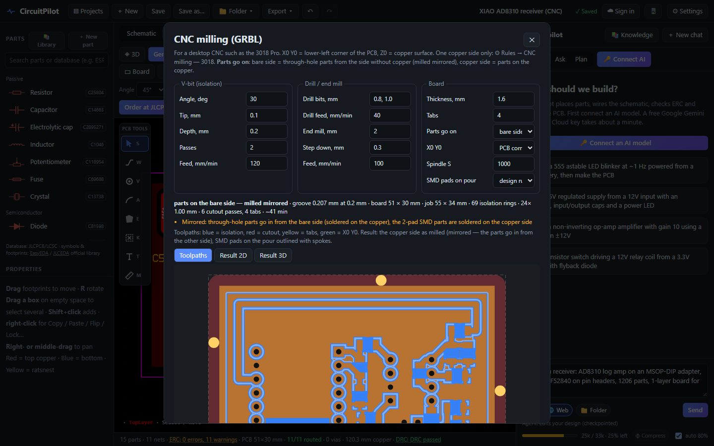
The CNC dialog: V-bit, drill bits, end mill, board and where the parts go. Toolpaths: blue isolation, red cutout, yellow tabs, green X0 Y0.
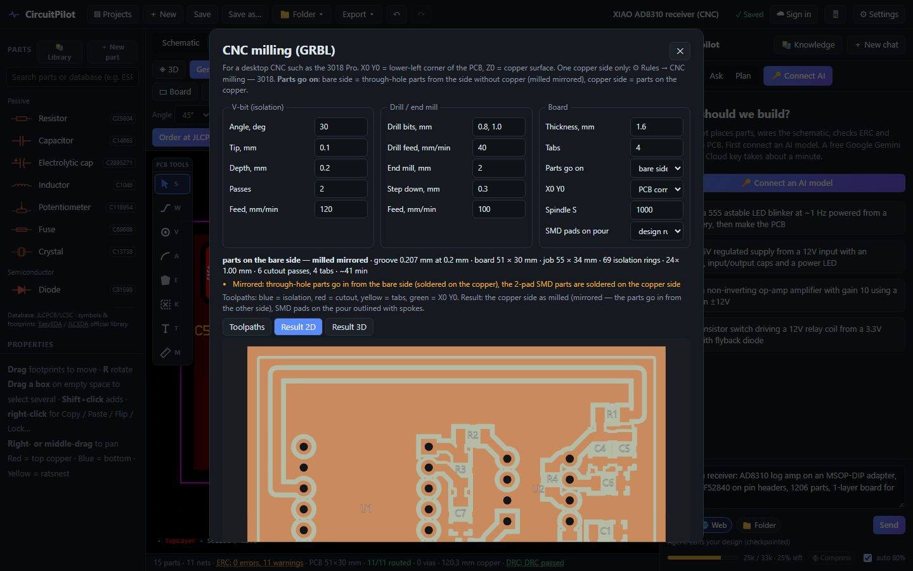
Result 2D: the board as it comes off the machine, before you start.
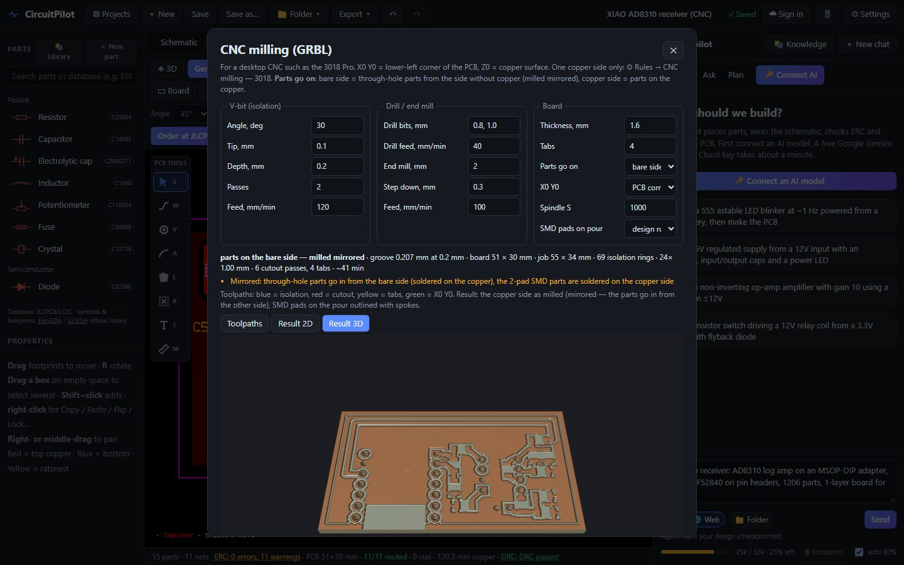
Result 3D: the milled board in 3D, drag to turn.
File
Tool
What
1_isolation.nc
V-bit 20–30°
Grooves around the copper (2 passes, 0.2 mm deep by default), and clearing under SMD parts
2_drill_0.80mm.nc, 2_drill_1.00mm.nc
Each drill bit
One file per bit you have; bigger holes are drilled and widened in a small circle
3_cutout.nc
2 mm end mill
Big holes, then the outline in steps with holding tabs
preview.svg, result-2d.svg, result-3d.html
Toolpaths, and the finished board flat and in 3D
README-cnc.txt
Bit order, sheet size, set-up steps, warnings
Important settings
Parts go on: bare side = through-hole parts go in from the side without copper, so the board is milled mirrored; copper side = all parts on the copper, not mirrored.
Depth 0.2 mm (copper is only 0.035 mm, but boards are rarely flat); the groove width follows from the V-bit angle and tip.
X0 Y0 = the PCB's lower-left corner (or the job corner); Z0 = the copper surface.
SMD pads on pour: outlined with spokes, or plain pour.
The tool checks its own toolpaths: no short with a narrower groove (a shallow spot), no broken net with a wider one (a worn bit).
On the machine
Double-sided tape over the whole back of the copper board, on a flat sacrificial board.
Jog the V-bit to where the PCB's lower-left corner goes (at least 3 mm in from the sheet edge) and set X0 Y0.
Z0: paper under the bit, step down 0.01 mm until it drags, remove the paper, 0.01 mm more, set Z0.
Run 1_isolation → each 2_drill file → 3_cutout. At each bit change set only Z0 again, never X0 / Y0.
Copper left in some areas: the board is not flat. Use Candle's height map with a probe clip, or cut deeper.
14. Enclosures and wearables (3D print)
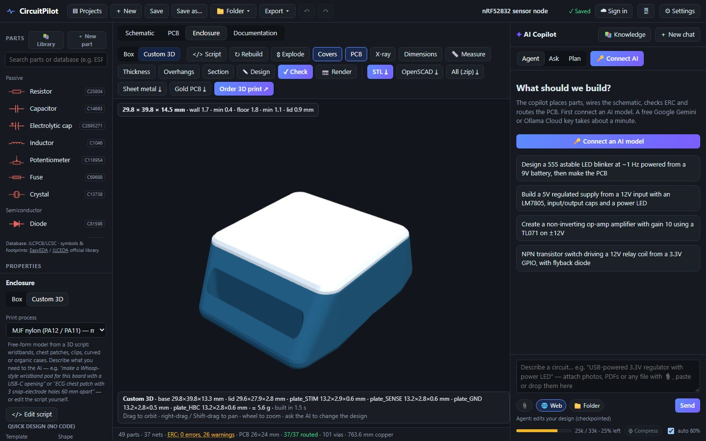
The Enclosure tab: a case fitted to the board, with toggles for lid, PCB, X-ray, section and checks.
The case follows the board outline; its height comes from the tallest part; openings for USB and jacks and holes above LEDs and buttons are added automatically.
＋ Add M3 mounting holes for screw standoffs; snap-fit lid with vents; battery choice (coin cells, LiPo, Li-ion) and the runtime estimate.
Custom 3D with 35 templates: wrist pods (Whoop style), watches, ECG chest patches, Holter boxes, pendants, key fobs, boxes. Describe what you want to the AI, or use Properties → Quick design.
✎ Design: model by hand (boxes, cylinders, text, screw bosses, connector holes), Tinkercad style.
✓ Check for the printing process (MJF, SLS, SLA, FDM): thin walls, knife edges, lid fit, overhangs. 📏 Measure, Dimensions, Section, 📷 Render.
Export STL, OpenSCAD, All (.zip) with STEP and order notes; Order 3D print opens JLC3DP. Sheet-metal electrodes go to JLCCNC, gold PCB electrodes to JLCPCB.
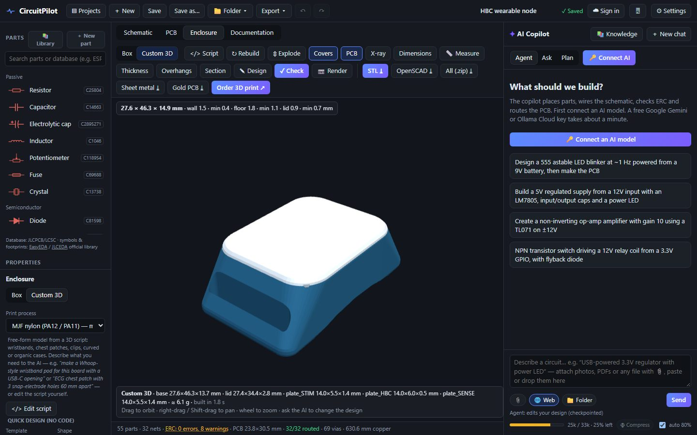
A wearable enclosure built from a template around a round sensor board.
15. Documentation: the product datasheet PDF
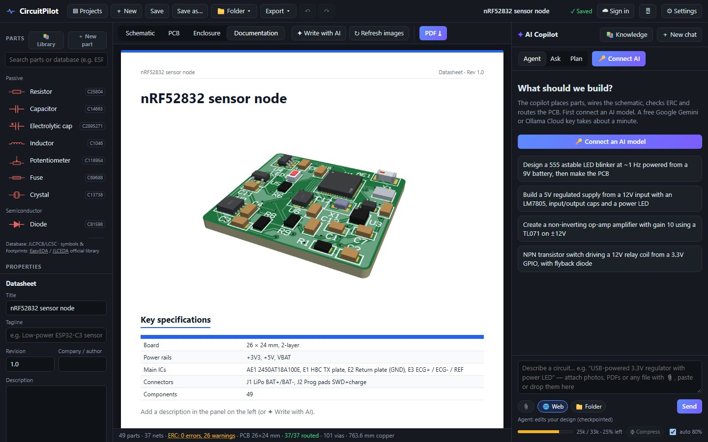
The Documentation tab: a live preview of the datasheet.
The datasheet has a cover with a 3D render and key specifications, description, features and applications (✦ Write with AI drafts them), main components and power rails, the full schematic, PCB renders and copper layout, fabrication specifications, a mechanical drawing with dimensions and mounting holes, connector pinouts, enclosure renders, the BOM with LCSC numbers and a revision table. PDF ⤓ saves it; ↻ Refresh images redraws the pictures after changes.
16. Claude Desktop and Claude Code (MCP)
Claude can design boards in CircuitPilot through the Model Context Protocol (MCP): over 90 tools for projects, parts, schematic, PCB, enclosure, exports and ordering. It works on the same projects you see, and every change shows up live in the CircuitPilot window. This needs the Windows app or the source version (not the web app).
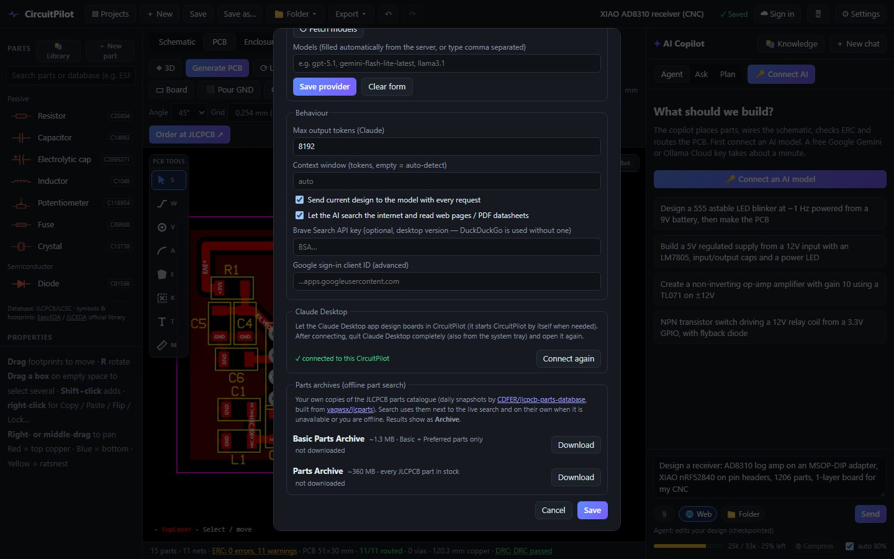
⚙ Settings → Claude Desktop → Connect.
Claude Desktop with the Windows app (easiest)
Install Claude Desktop from claude.ai/download and sign in.
Start CircuitPilot.exe, open ⚙ Settings → Claude Desktop → Connect (or run CircuitPilot.exe --connect-claude).
Quit Claude Desktop completely, also from the system tray (right-click the icon → Quit), and open it again.
In Claude Desktop, check that circuitpilot is listed under the tools / connectors button. There is also a ready-made Design a board with CircuitPilot prompt in the + menu.
Ask, for example: "Design a USB-C powered ESP32-C3 board with a BME280 sensor, 30 × 30 mm."
Claude calls start_here first. If CircuitPilot is not running, it starts it by itself; the open window follows whichever project Claude works on. The connection uses the Node.js bundled with the app.
Claude Desktop from the source version
node mcp/install-claude-desktop.mjs # once, then restart Claude Desktop completely
Claude Code
The repository ships a .mcp.json: open the folder in Claude Code (with the server running) and approve the circuitpilot server. Or add it for every folder:
claude mcp add circuitpilot -e CP_URL=http://localhost:5173 -- node /path/to/CircuitPilot/mcp/circuitpilot-mcp.mjs
Then ask, for example: "Using circuitpilot, create a project 'ESP32 sensor board' with an ESP32-C3-MINI-1, AMS1117 and USB-C, then generate the PCB and export Gerbers to ./fab." Other MCP clients (Cursor, VS Code …) use the same command.
Good prompts for Claude
Open my project "XIAO AD8310 receiver" and make the schematic readable.
Mill this board on my CNC 3018: 1 layer, parts on the bare side, my drills are 0.8 and 1.0 mm. Export the G-code to D:\cnc.
Price this board at JLCPCB, 10 pieces, green, HASL.
Make a Whoop-style wristband enclosure for this board with a 20 mm strap and export it for JLC3DP.
Export the schematic and PCB as PDF to my Documents folder.
Useful facts
Every tool takes project (id or exact name), so Claude never edits the wrong project by accident. The current project is remembered across restarts.
Long jobs (generate_pcb, route_pcb, optimize_pcb, export_project …) run in the background and return a job_id; Claude waits with job_status.
view_design gives Claude a screenshot of the schematic, PCB, 3D board or enclosure, so it can check its own work. With no window open, CircuitPilot draws it in a hidden browser.
GET /openapi.json returns an OpenAPI 3.1 description of every tool, for scripts, n8n or OpenAI function calling. Add "project": "<id or name>" to any call. The REST server listens on 127.0.0.1 only (add --public to expose it).
Phones and other PCs
Run the Windows app with --lan --password SECRET (or python server.py 5173 --password SECRET) and open http://<your-PC-IP>:5173 on the other device. For a public link: cloudflared tunnel --url http://localhost:5173. Always set a password first.
18. Settings reference
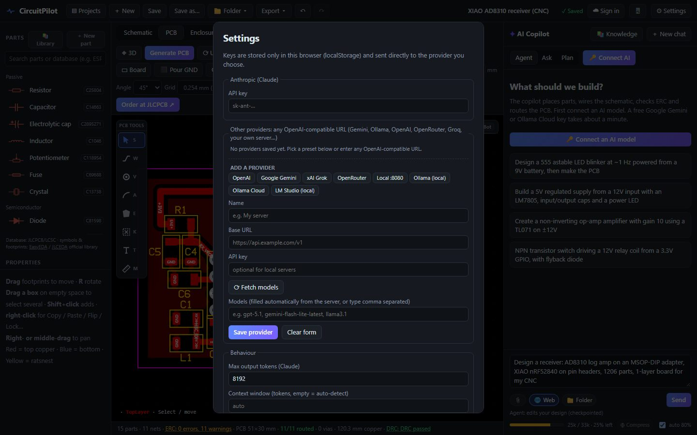
⚙ Settings.
Section
What you set
AI providers
Anthropic key and model; OpenAI-compatible providers (URL, key, ⟳ Fetch models); default model
Web access
Let the AI search and read web pages; DuckDuckGo or a Brave Search key
Parts archives
Download / update the Basic and full JLCPCB parts archives for offline search
Google sign-in
Projects and My Library in your Google Drive
Claude Desktop
Connect / disconnect (Windows app and desktop version)
Theme
System, light or dark (top-bar button)
19. Keyboard shortcuts
Everywhere
Ctrl+Z / Ctrl+Y
Undo / redo
Ctrl+S
Save now
Ctrl+Shift+S
Save as
Shift+F
Library panel
F
Fit to window
Ctrl+C / X / V / D / A
Copy, cut, paste, duplicate, select all
R
Rotate the selection
Del
Delete the selection
Wheel / right-drag
Zoom / pan
PCB
S / Esc
Select tool
W
Route a track
T / B (routing)
Top / bottom layer, adds a via
Space (routing)
45° / 90° / any angle
/ (routing)
Flip the bend
+ / -
Track width, label size
V · M
Via · measure
E · A · K · T
Copper area · arc · keep-out · text
20. Troubleshooting and FAQ
Problem
What to do
Windows says "Windows protected your PC"
More info → Run anyway (the app is not code-signed)
The AI only chats and does not change the design
Use Agent mode, and a model with tool calling (Gemini Flash, Claude, gpt-oss, Qwen 2.5+ …)
A local model cannot be reached from pcbgo.site
Enable CORS in the model server (chapter 3), or use the Windows app
Some nets stay unrouted
✨ Optimize, a GND pour, a slightly bigger board, or wider clearance only where needed. On 1 layer, a wire link
Gerbers refuse to download
The DRC window lists the errors: Fix on board, Re-route, or Download anyway
Part search finds nothing
Check the internet connection, or download the parts archive in ⚙ Settings for offline search
Claude Desktop does not show CircuitPilot
Connect again in ⚙ Settings, then quit Claude Desktop from the system tray and reopen it
Claude does not know a new tool
Restart Claude Desktop / reconnect the MCP server after updating CircuitPilot
CNC: copper left in some areas
The board is not flat: Candle height map, a flatter spoil board, or 0.02 mm deeper
CNC: through-hole pins on the wrong side
Choose Parts go on → bare side (mirrored) for through-hole parts
My projects are gone on the web app
Browser data was cleared. Use ☁ Sign in (Google Drive) or 📁 Save to folder to keep a copy
Limits
The PCB has 1 or 2 copper layers. Inner layers of imported 4+ layer boards are skipped.
Very dense boards may leave a net unrouted within the time budget.
Touch editing on phones is not available yet.
Always check part pinouts against the datasheet before ordering.
21. Quick reference: from idea to board
Start: pcbgo.site, or CircuitPilot.exe for local models, knowledge folders and Claude.
Connect AI: a free Gemini or Ollama Cloud key, or Claude, or a local model.
Describe the circuit in the chat, or draw it: parts from the panel, click pin to pin.
Check: ERC, then ✨ Organize for a readable schematic.
Rules: JLCPCB default, or Home etching / CNC milling for boards you make yourself.
Generate PCB, then ✨ Optimize if something is unrouted, ⬛ Pour GND, DRC.
Look at it in ◈ 3D.
Make it: Order at JLCPCB, or CNC ⤓ for your mill (check Result 2D / 3D first).
Case: the Enclosure tab, STL to print or Order 3D print.
Document: the Documentation tab → PDF ⤓.
CircuitPilot is open source: github.com/Abdelhayali/CircuitPilot. Part data: JLCPCB / LCSC, EasyEDA, KiCad, SparkFun, Digi-Key libraries (see the README for licenses). Check JLCPCB's current capabilities before ordering.